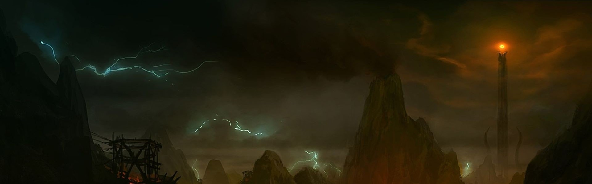
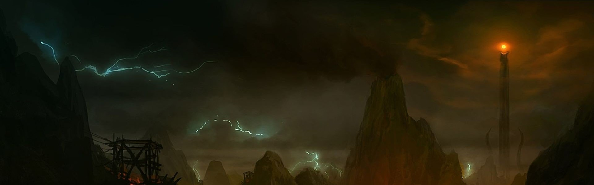

Ludzie
Jedna z ras Śródziemia. Drugie Plemię Dzieci Ilúvatara, Główni mieszkańcy Ardy w Czwartej Erze. Ludzie obudzili się na wschodzie w krainie Hildórien w dniu pierwszego wschodu Słońca. Ojców ludzi nazywa się Atanatari. Przez pierwsze 7 dni słońce wstawało na zachodzie dlatego zawsze potem zwracali się w tą stronę. Bali się Valarów, słabo rozumieli znaki Ulma który starał się nimi opiekować. Pierwszych umiejętności nauczyli się od elfów. Pod względem moralnym, plemiona ludzi można podzielić na trzy grupy: Stojących po stronie dobra (np. Edainowie), stojący po stronie zła (np. Easterlingowie) i niezależni (np. Lossothowie). W każdej z tych grup znaleźć można jednak plemiona łamiące swój standard (np. Lud Bóra - który walczył do końca po stronie elfów, czy Czarnych Numenorejczyków, którzy przeszli na stronę Saurona). W każdej z tych grup znaleźć też można indywidualne postawy, które były z różnych powodów i przyczyn niezależne lub wręcz przeciwne.

Elfy
Pierwsza rasa z Dzieci Ilúvatara, nazywana z tego powodu „Pierworodnymi”. Uznawani za najpiękniejszą i najmądrzejszą rasę w Śródziemiu, w szczególności dzięki swojej nieśmiertelności. Na początku wszyscy posiadali miano Eldarów nadane im przez Oromëgo, ale później nosili je tylko ci, którzy poszli za nim na Zachód. Najcenniejszymi artefaktami, jakie kiedykolwiek stworzyli elfowie, były Silmarile. Wykuł je Fëanor, pochodzący ze szczepu Ñoldorów, i zamknął w nich światło Dwóch Drzew. Nienawiść do elfów pozostała wśród sług Morgotha, z których najpotężniejszym był Sauron. Pod postacią Annatara namówił Celebrimbora do wykucia Pierścieni Władzy. Stały się one podłożem zniewalania przez Saurona zarówno elfów, jak i ludzi przez dwie kolejne ery. Ludzie powoli nabierali pewności i roztropności, uczyli się od elfów wielu umiejętności, byli jednak także pod silnymi wpływami zła, większym niż elfowie
Krasnoludy
Jedna z ras Śródziemia, przez elfów zwani Naugrimami, sami siebie zaś nazywali Khazâdami. Ich stwórcą i nauczycielem był Aule, jeden z Aratarów, mistrz rzemiosła i wiedzy o przedmiotach materialnych. On stworzył góry i miał największą wiedzę spośród wszystkich Valarów. Odziedziczyli więc po nim wiele cech: bardzo kochali ziemię, brzydzili się złem, byli doskonałymi rzemieślnikami i górnikami (a co się z tym wiązało - wyróżniały się dużą wytrzymałością, precyzją i odpornością na ogień). Nikt w Śródziemiu nie wykonywał tak pięknego, a zarazem trwałego oręża jak oni. Ponieważ Aule stworzył ich w dniach potęgi Melkora, nadał im też inne cechy, takie jak: nieustępliwość, czujność przed wszystkimi podstępami, zawziętość w przyjaźni i wrogości.
Orkowie
Rasa plugawych istot humanoidalnych stanowiących główną siłę militarną wojsk walczących w służbie zła dla Morgotha, Saurona, Czarnoksiężnika z Angmaru i Sarumana. Pierwsi orkowie pojawili się w Śródziemiu w Dawnych Dniach, jeszcze przed zburzeniem Utumno. Ich pochodzenie jest kwestią sporną. Według przekazów mędrców z Tol Eressëi orkowie wywodzą się od elfów pojmanych przez sługi Morgotha krótko po przebudzeniu, zanim ci spotkali Oromëgo. Torturowani, więzieni i upodleni zostali zniewoleni wolą Czarnego Władcy, tak że służyli mu ze strachu, nienawidząc go w głębi czarnych serc.
Gobliny
W filmowych adaptacjach Petera Jacksona, to plemię zdziczałych orków z Gór Mglistych. W książce "goblin" to alternatywne określenie orków. Gobliny różnią się od pozostałych orków pod względem społecznym. Pozostali przedstawiciele tej rasy są z reguły niewolnikami, będącymi siłą militarną pod władzą czarnoksiężnika. Gobliny zaś posiadają własne, autonomiczne królestwo oraz króla, co sprawia, że są niezależne od nikogo. Świadczy to o pewnej odrębności goblinów i orków, którą można zaobserwować w filmach. Dochodzą do tego jeszcze pewne różnice w anatomii i sposobie poruszania się.
Hobbity
Jedna z ras Śródziemia, zamieszkująca krainę Shire. Hobbici byli ludem, którego istnienie ludzie często wkładali między bajki. Ich pochodzenie nie jest do końca znane, ale wiadomo, że na początku Trzeciej Ery zamieszkiwali dolinę Anduiny. Wyróżniamy trzy szczepy hobbitów (Fallohidzi, Harfootowie i Stoorowie). Zamieszkiwali głównie Shire, choć spotykano ich także w innych krainach, lecz w bardzo małych ilościach, ponieważ bardzo nie znosili podróżować. Byli ludem niewielkim, mniejszym od krasnoludów, zdecydowanie mniej przysadzistym i grubym, nawet jeśli tylko trochę ustępowali im wysokością. Obdarzeni byli czułym słuchem i bystrym wzrokiem, a choć mieli skłonności do tycia i nie lubili zbędnego pośpiechu, poruszali się lekko i zwinnie. Wcześnie opanowali sztukę szybkiego i bezszelestnego znikania - stosowaną w przypadku niespodziewanego spotkania z Dużymi Ludźmi, z którymi nie mieli ochoty rozmawiać - i udoskonalili ją do takiego stopnia, że ludziom zdawać się może magiczna